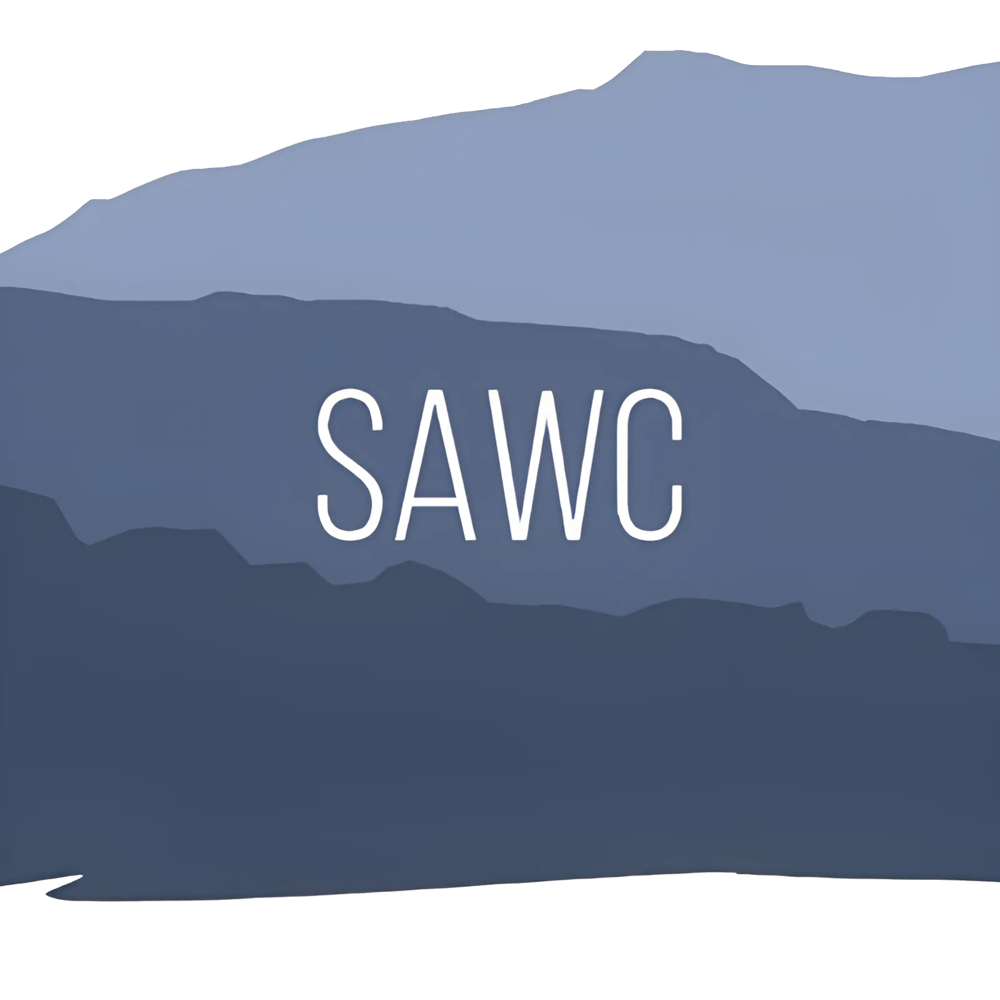
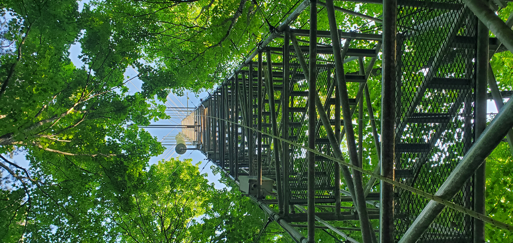
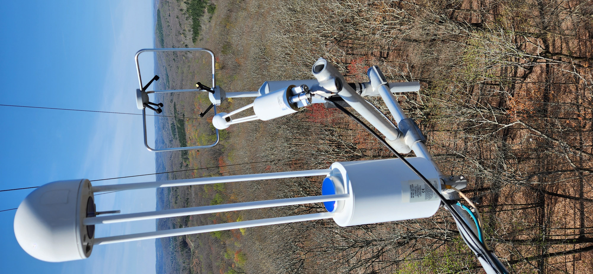
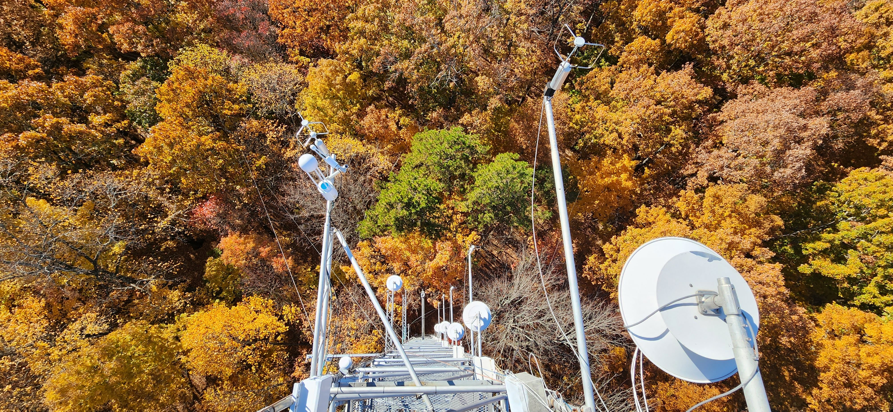
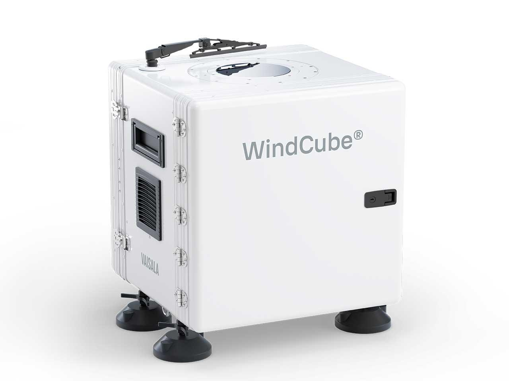
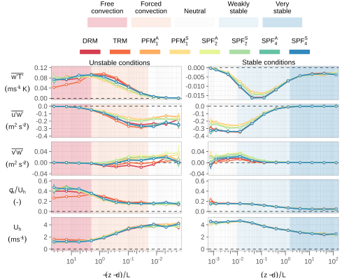
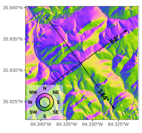

| Site name | Vegetation | Operational period |
|---|---|---|
| Audubon, AZ | Arid Grassland | 2002 - present |
| Chestnut Ridge, TN | Hickory/Oak/Maple | 2005 - present |
| Bondville, IL | Corn, Soybean | 2002 - present |
| Bondville2, IL | Corn, Soybean | 2003 - 2007 |
| Brookings, SD | Grassland | 2004 - 2015 |
| Fort Peck, MT | Grassland | 2000 - 2015 |
| Walker Branch, TN | Hickory/Oak/Maple | 1995 - 2007 |

Southern Appalachian Weather and Climate Workshop
Asheville, NC | 27-28 March 2026

Southern Appalachian Weather and Climate Workshop
Asheville, NC | 27-28 March 2026
The New Chestnut Ridge Supersite
Enhanced Measurements of Soil-Forest-Atmosphere Exchange
Instrumentation Overview
Chestnut Ridge 2025 Update
New instrumentation was deployed at Chestnut Ridge to enhance measurement quality and expand the site’s scientific scope.
- Previous (June 2025): Original site configuration prior to the 2025 expansion.
- Current: Updated instrumentation after system improvements and new deployments.
Measured variables has been grouped as:
- EC core: Energy, water, and CO2 fluxes
- Meteorological variables
- Radiation measurements
- Soil observations
- Ancillary measurements




Images courtesy of John Kochendorfer, ATDD
Ancillary measurements
Ground-based Wind Lidar
- Instrument: WindCube V2.1 | Vaisala
- Installed along Chestnut Ridge at the OR reservation
- Measurements began in June 2023
- Currently under maintenance with planned redeployment
Progress:
20%
🚧

Previous setup
- Measurement range: 40 to 300 m above ground level (14 range gates)
- Wind speed range: −23 to +23 m s⁻¹
- Accuracy: Wind speed 0.1 m s⁻¹, wind direction 2°
- Scanning method: Doppler Beam Swinging (DBS)
- 1 vertical beam
- 4 off-zenith beams at 28° (azimuths 0°, 90°, 180°, 270°)
- 1 vertical beam
- Sampling frequency: 1 Hz

Video and image courtesy of Vaisala
Ongoing Research Topics
Complex terrain effects on EC fluxes
- Evaluate coordinate rotation methods for EC fluxes at Chestnut Ridge.
- Goal: Identify optimal rotation strategies for complex terrain.

Energy Balance Closure in Deciduous Forests
- Assess seasonal and interannual energy imbalance variability and investigate topographic modulation of surface-atmosphere exchange.

